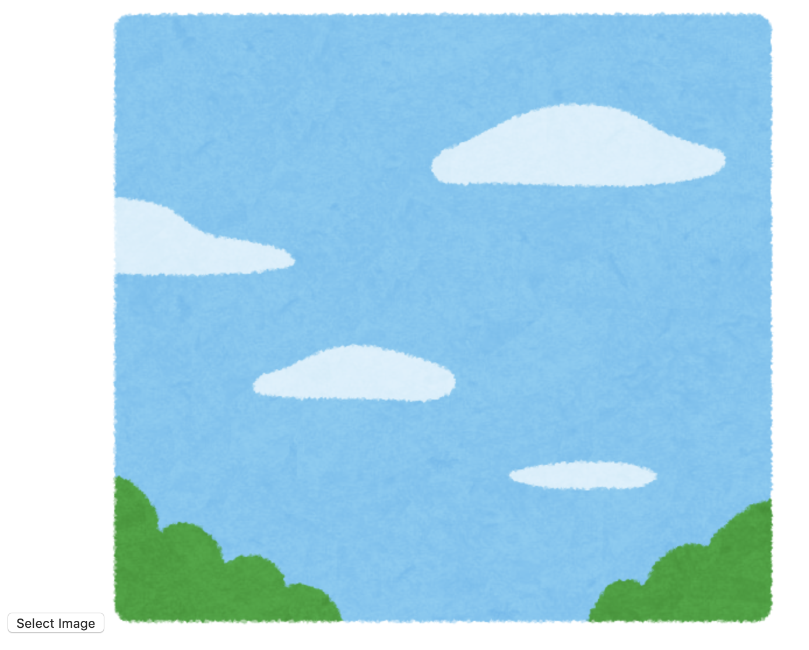
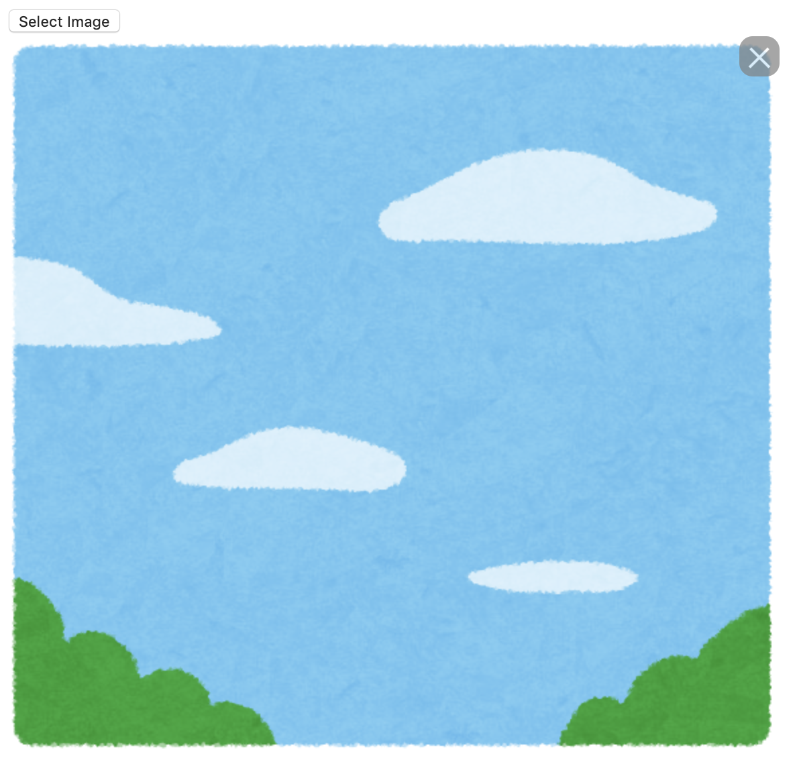

Elmを利用して、画像を選択してそれを表示するアプリを作る。
ファイル読み込みの方法
Select.file関数を利用する。これはファイル選択用のエクスプローラを開くためのCmd Msgを作成してくれる。選択したファイルはMsgに載せられる。
適切なMIMEタイプを指定すると、エクスプローラ上にてそのタイプのファイルしか選択できなくなる。例えば、text/plainを選択しておけば、拡張子.txtのファイルしか選択できなくなる。
Select.file "MIMEタイプのリスト" "Msg"
画像ファイルへの変換
こうして得られたファイルはFileと呼ばれる型で保持される。
もしファイルを文字列として扱いたいなら、File.toStringを利用する。
もし画像として扱いたいなら、File.toUrlを利用する。これは画像をBase64符号化した文字列を作る。これをimgタグのsrc属性に指定すれば、画像が表示される。
画像を選択し、それを表示するアプリの作成
準備
プロジェクトを作成して、elm/fileをインストール。
$ elm init
$ elm install elm/file
src/Main.elmの雛形を作る。
module Main exposing (..)
import Browser
import Html exposing (..)
import Html.Attributes exposing (..)
import Html.Events exposing (..)
import File exposing (File)
import File.Select as Select
import Task
main =
Browser.element
{ init = init
, update = update
, view = view
, subscriptions = subscriptions
}
type alias Model =
{
}
init : () -> (Model, Cmd Msg)
init _ =
( {
}
, Cmd.none
)
type Msg
= Msg
update : Msg -> Model -> (Model, Cmd Msg)
update msg model =
( model
, Cmd.none
)
view : Model -> Html Msg
view model =
div []
[
]
subscriptions : Model -> Sub Msg
subscriptions model =
Sub.none
htmlファイルを自分で作りたいので、makeのときはjsファイルを単独で生成させる。
$ elm make src/Main.elm --output=main.js
index.htmlを作成し、次のようにする。
<!DOCTYPE html>
<html>
<head>
<meta charset="utf-8">
<link rel="stylesheet" href="style.css">
</head>
<body>
<div id="elm"></div>
<script src="main.js"></script>
<script>
const app = Elm.Main.init({
node: document.getElementById('elm')
})
</script>
</body>
</html>
style.cssも作っておく。
これでelm reactorで見ると、真っ白なページが表示されているはず。
model定義
以降はしばらくsrc/Main.elmで作業する。
必要なのは画像のURLだから、それ用のレコードを用意する。画像が読み込まれていない時点では存在しないため、型はMaybeにする。
type alias Model =
{ url : Maybe String
}
それに応じてinitも編集。
init : () -> (Model, Cmd Msg)
init _ =
( { url = Nothing
}
, Cmd.none
)
view定義
ボタンが押されたら、ImageRequestedメッセージを送るようにする。
もしmodel.urlが存在すれば、src属性にそれを指定して画像を表示する。
view : Model -> Html Msg
view model =
div []
[ button
[ onClick ImageRequested
]
[ text "Select Image"
]
, viewImage model
]
viewImage : Model -> Html Msg
viewImage model =
case model.url of
Nothing ->
p []
[ text "No image" ]
Just url ->
img
[ src url
]
[]
update定義
先ほど書いたImageRequestedに加え、ファイルが取得できたときに送られるメッセージImageSelectedとファイルをurlに変換した時に送られるメッセージImageLoadedを定義する。
type Msg
= ImageRequested
| ImageSelected File
| ImageLoaded String
ImageRequestedが送られてきたとき: Select.fileでエクスプローラを開く。選択し終わるとImageSelectedメッセージが送られる。ImageSelectedが送られてきたとき: File.toUrlでURLに変換する。これはTask型なので、Task.performでCmd Msgを作成する。変換が終わるとImageLoadedメッセージが送られる。ImageLoadedが送られてきたとき: urlを入れたmodelを返す。
update : Msg -> Model -> (Model, Cmd Msg)
update msg model =
case msg of
ImageRequested ->
( model
, Select.file ["image/png"] ImageSelected
)
ImageSelected file ->
( model
, Task.perform ImageLoaded (File.toUrl file)
)
ImageLoaded url ->
( { model | url = Just url }
, Cmd.none
)
ボタン"Select"を押して画像を選択すると、次のように画像が右に表示される。

取り消しボタンの追加
×ボタンを追加して、それをクリックすると画像の表示が消えるようにする。
×ボタンはa要素で表現し、記号はCSSで表現することにする。a要素は画像の右上に重なるように配置したいため、CSSでposition: absoluteを指定することになる。などいろいろ考えた結果、以下のように要素を構成する。
viewImage : Model -> Html Msg
viewImage model =
...
Just url ->
div
[ class "image-wrapper"
]
[ div
[ class "image-container"
]
[ a
[ class "del-btn"
, onClick DeleteClicked
]
[]
, img
[ src url
]
[]
]
]
MsgにDeleteClickedを追加し、update関数にも追加をする。
type Msg
= ...
...
| DeleteClicked
update : Msg -> Model -> (Model, Cmd Msg)
update msg model =
case msg of
...
DeleteClicked ->
( { model | url = Nothing }
, Cmd.none
)
style.cssの編集
これでmakeした後にアプリを動かしても、a要素のサイズが0なのでボタンは現れない。これをCSSで調整する。
まずは画像とa要素をひとまとめにした領域.image-containerをinline-blockにすることで、画像のサイズぴったりに全体のサイズを調整する。a要素の位置を絶対座標にしたいので、position: relativeを指定する。
.image-container {
display: inline-block;
position: relative;
}
a要素の領域は20px × 20pxにする。背景はグレーとし、丸みを帯びさせる。位置は右上にする。色は少し透明にしておく。マウスを乗せた時のカーソルの設定をする。
.del-btn {
width: 30px;
height: 30px;
border-radius: 10px;
background-color: gray;
position: absolute;
top: 0;
right: 0;
opacity: 0.7;
cursor: pointer;
}
バツ印は擬似要素の枠線で指定する。枠線が領域中央になるように移動し、45度傾ける。枠の色は白にする。
.del-btn::before {
content: "";
width: 20px;
height: 1px;
border-top: 2px solid white;
position: absolute;
top: 15px;
left: 5px;
transform: rotate(45deg);
}
.del-btn::after {
content: "";
width: 20px;
height: 1px;
border-top: 2px solid white;
position: absolute;
top: 15px;
left: 5px;
transform: rotate(-45deg);
}
いい感じ。

参考
File - file 1.0.5